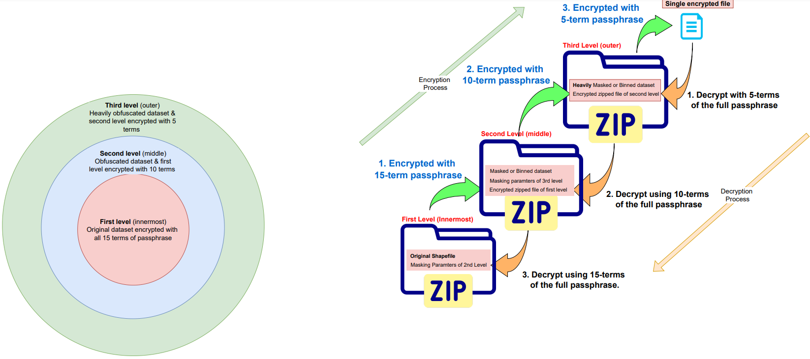
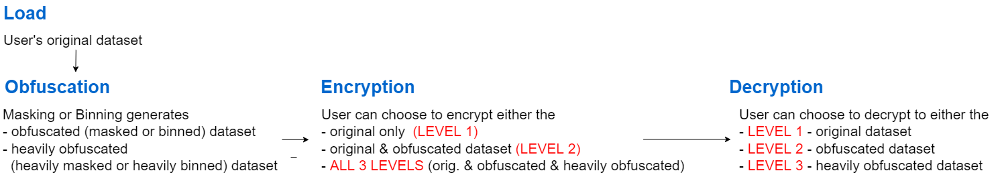

What is encryption?
Encryption is meant to solve the problem of data ownership by storing the data in an encrypted format with the user being in control of keys required to decrypt the data. Moreover, the user controls which individual has access to which level of detail of the original dataset. In this scheme, different user trust levels is accommodated by sharing varied lengths of the main passphrase with different individuals for decryption, who then subsequently have access to different levels of masked data.
The original and obfuscated datasets are protected through an encryption scheme that allows access only from chosen users. The datasets are encrypted with using the SubtleCrypto module, which encrypts data within the plugin internally. As such no sensitive data is leaves the browser or user's computer. Encryption is carried out using the AES-GCM algorithm with 256-bit keys. The MapSafe plugin encyption module includes different options to users:
- Generate Passphrase
- Cater for users with varied access levels
- Passphrase protection using Public key encryption
Generate Passphrase
Encryption uses a passphrase to transform the original data into a form unrecoverable by an adversary. Users can generate this random passphrase of 15 terms through the Generate Passphrase button. Pressing this button generates a different random passphrase each time.
Choose to include any levels in the encrypted volume — one, two, or three
Users can choose to encrypt either the QGIS layers or any OS files (including GIS files). Once users save the masked or binned layers, they can be included for encryption within the three levels. Any number of levels, up to three, can be encrypted. Ideally, the original dataset will be encrypted at the first (innermost) level, while the obfuscated layers will be at the second, and the more obfuscated layer will be at the third level. In addition to the saved layers, any OS files can be included within these levels.
The figure below shows the encryption module with the Mapsafe plugin. While the encryption is a one step process for the user, in the background, the plugin performs multi-level encryption of the three levels of masked geospatial datasets with the parameters within the plugin.
Encrypt the QGIS layers or OS files
In MapSafe plugin’s encryption scheme, the original geospatial dataset alone or together with its obfuscated repre- sentations (medium coarse and coarse, see Table 1), are incorporated into a single encrypted volume that contains multiple secret levels, each holding a different repre- sentation of the original dataset, in a nested encryption scheme. The volume can be shared with users who can decrypt them based on their privilege. Figure 5 shows the encryption feature, where data owners can choose to encrypt only the original dataset, or together with its obfuscated representations. The nested approach makes it easier for sharing and coordination.
Encrypt the passphrase (symmetric key) itself using public key approach
The passphrase used for dataset encryption, in turn, can be encrypted using the recipient’s public key for secure sharing. Rather
than re-encrypting datasets with a new key everytime a new user requests access to the
(encrypted) dataset, this approach allows to just encrypt the passphrase. Moreover, a
separate encrypted dataset does not need to be shared, especially through the cloud.
This approach also protects the secret passphrase during exchange between the data.
Refer to the following section for details.
Encryption Levels
Encryption uses a passphrase to transform the original data into a form unrecoverable by an adversary. Mapsafe uses the encryption facility provided by the Web.Cryto toolkit whiich is in-built within the browser. A 15 term passphrase is randomly generated and used to encrypt the masked dataset data which is later required to recover the original data. The masked dataset is encrypted in the browser memory at three levels.
- The full 15 term passphrase is used to encrypt the original dataset,
- 10 terms of the full passphrase to encrypt the masked dataset, and
- 5 terms of the full passphrase to encrypt the `more' masked dataset.
These passphrases are required to later decrypt to each of the three levels.
A detailed description of the encryption and decryption proceses are provided in the following image.

The obfuscation (masking and hexabinning) and encryption are carrried out at multipe levels:
